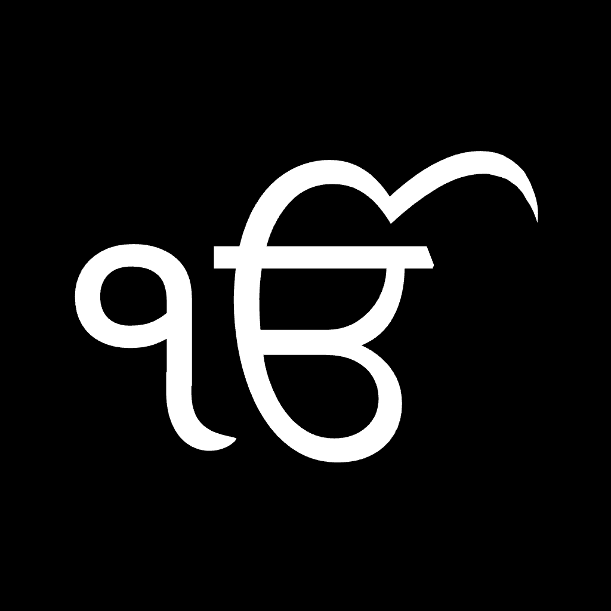

Hukam
The daily Hukamnama from Sri Harmandir Sahib — read whole in the app, carried line by line on your Home Screen and Lock Screen through the day, with a feed of Gurbani lines to sit with.
Every word of Gurbani in Hukam is free, and always will be.
Reach us at info@amarlabs.net.